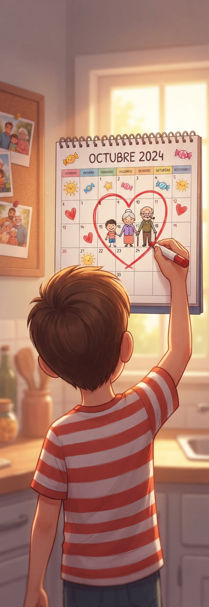
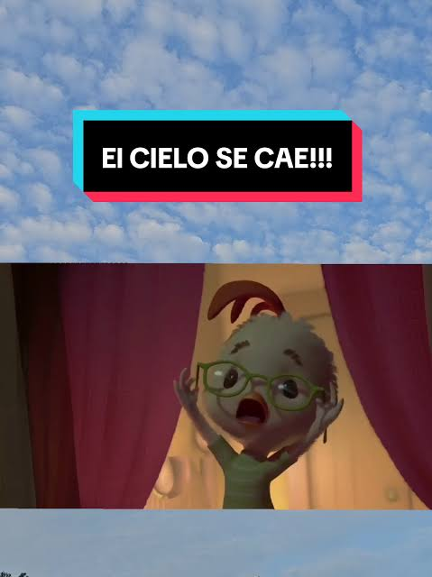
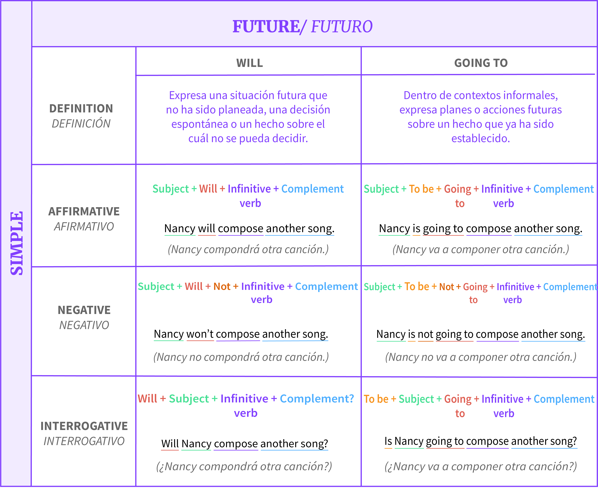

Future: Going to vs. Will
When we use BE GOING TO
-
We use "going to" to talk about plans, intentions, or decisions made before the moment of speaking:
- I am going to visit my parents this weekend.

- Look at those dark clouds! It is going to rain. (Predictions based on evidence)

When we use WILL
-
We use "will" to talk about spontaneous decisions, offers, promises, or predictions based on opinion:
- I'm thirsty. I will get a glass of water. (Spontaneous decision)
- I think artificial intelligence will change the world. (Prediction based on opinion)
Structure
REMEMBER: BE GOING TO uses subject + am/is/are + going to + base verb. WILL uses subject + will + base verb for all persons.

Practicing What I've Learned
Practicing What I've Learned: responde las preguntas aquí mismo y revisa tu puntaje.
In this link you can find exercises about Future (Going to vs. Will): Going to vs. Will Exercises